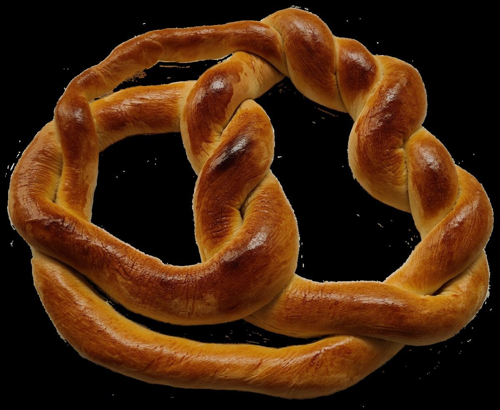

店のこと
鞍の部位の配置図
お店の詳しい情報は準備中です。ここでは、制作側が考えたデザインの考え方を紹介します。



制作側の連想
番号は、部位の番号
ホームの図にある1〜6の番号は、それぞれ鞍の部位の名前に対応します。鞍の部位を図にしたもので、制作側の連想です。お店の理念・由来とは無関係で、実際の製品の仕様を示すものでもありません。
1鞍頭(ポメル)
鞍の前の端にある、盛り上がった部分。前方の目印になる形をしている。
2座面(シート)
人が腰を下ろす、鞍の中央のくぼんだ部分。革で張られた形が多い。
3鞍尾(カントル)
座面の後ろ側で、少し立ち上がっている部分。
4鐙革(あぶみ革)
鞍の左右から垂れ下がる革のひもで、穴を使って長さを調整する。
5鐙(あぶみ)
鐙革の先に付く、足をのせるための金具の輪。底には踏み板がある。
6腹帯(ガース)
鞍を下から回して留めるための、幅のあるベルトの部分。
写真(イメージ)
写真(イメージ)


写真はイメージです。お店のものではありません。